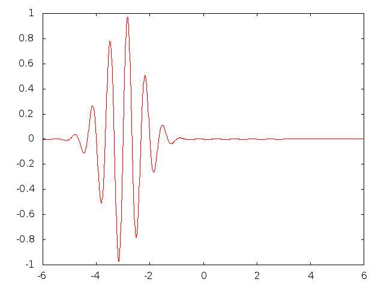
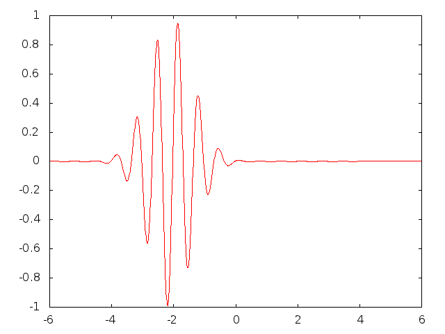

Doconce is two things:
Disclaimer: Doconce is a simple tool, largely based on interpreting and handling text through regular expressions. The possibility for tweaking the layout is obviously limited since the text can go to all sorts of sophisticated markup languages. Moreover, because of limitations of regular expressions, some formatting of Doconce syntax may face problems when transformed to HTML, LaTeX, Sphinx, and similar formats.
Doconce itself is pure Python code hosted at http://code.google.com/p/doconce. Its installation from the Mercurial (hg) source follows the standard procedure:
# Doconce hg clone https://doconce.googlecode.com/hg/ doconce cd doconce sudo python setup.py install cd ..
If you make use of the Preprocess preprocessor, this program must be installed:
A much more advanced alternative to Preprocess is Mako. Its installation is most conveniently done by pip,svn checkout http://preprocess.googlecode.com/svn/trunk/ preprocess cd preprocess cd doconce sudo python setup.py install cd ..
This command requires pip to be installed. On Debian Linux systems, such as Ubuntu, the installation is simply done bypip install Mako
Alternatively, one can install from the pip source code.sudo apt-get install python-pip
To make LaTeX documents (without going through the reStructuredText format) you need ptex2tex, which is installed by
As seen, cp2texmf.sh copies some special stylefiles that that ptex2tex potentially makes use of. Some more standard stylefiles are also needed. These are installed bysvn checkout http://ptex2tex.googlecode.com/svn/trunk/ ptex2tex cd ptex2tex sudo python setup.py install cd latex sh cp2texmf.sh # copy stylefiles to ~/texmf directory cd ../..
on Debian Linux (including Ubuntu) systems. TeXShop on Mac comes with the necessary stylefiles (if not, they can be found by googling and installed manually in the ~/texmf/tex/latex/misc directory).sudo apt-get install texlive-latex-extra
The minted LaTeX style is offered by ptex2tex and popular among users. This style requires the package Pygments:
If you use the minted style, you have to enable it by running ptex2tex -DMINTED and then latex -shell-escape, see the the section From Doconce to Other Formats.hg clone ssh://hg@bitbucket.org/birkenfeld/pygments-main pygments cd pygments sudo python setup.py install
For rst output and further transformation to LaTeX, HTML, XML, OpenOffice, and so on, one needs docutils. The installation can be done by
To use the OpenOffice suite you will typically on Debian systems installsvn checkout http://docutils.svn.sourceforge.net/svnroot/docutils/trunk/docutils cd docutils sudo python setup.py install cd ..
sudo apt-get install unovonv libreoffice libreoffice-dmaths
There is a possibility to create PDF files from reST documents using ReportLab instead of LaTeX. The enabling software is rst2pdf. Either download the tarball or clone the svn repository, go to the rst2pdf directory and run sudo python setup.py install.
Output to sphinx requires of course Sphinx, installed by
hg clone https://bitbucket.org/birkenfeld/sphinx cd sphinx sudo python setup.py install cd ..
When the output format is epydoc one needs that program too, installed by
svn co https://epydoc.svn.sourceforge.net/svnroot/epydoc/trunk/epydoc epydoc cd epydoc sudo make install cd ..
Finally, translation to pandoc requires the Pandoc program (written in Haskell) to be installed.
sudo apt-get install pandoc
Remark. Several of the packages above installed from source code are also available in Debian-based system through the apt-get install command. However, we recommend installation directly from the version control system repository as there might be important updates and bug fixes. For svn directories, go to the directory, run svn update, and then sudo python setup.py install. For Mercurial (hg) directories, go to the directory, run hg pull; hg update, and then sudo python setup.py install. Doconce itself is frequently updated so these commands should be run regularly.
The current text is generated from a Doconce format stored in the
file in the Doconce source code tree. We have made a demo web page where you can compare the Doconce source with the output in many different formats: HTML, LaTeX, plain text, etc.docs/manual/manual.do.txt
The file make.sh in the same directory as the manual.do.txt file (the current text) shows how to run doconce format on the Doconce file to obtain documents in various formats.
Another demo is found in
In the tutorial directory there is also a make.sh file producing a lot of formats, with a corresponding web demo of the results.docs/tutorial/tutorial.do.txt
Transformation of a Doconce document mydoc.do.txt to various other formats applies the script doconce format:
or justTerminal> doconce format format mydoc.do.txt
The mako or preprocess programs are always used to preprocess the file first, and options to mako or preprocess can be added after the filename. For example,Terminal> doconce format format mydoc
The variable FORMAT is always defined as the current format when running preprocess. That is, in the last example, FORMAT is defined as latex. Inside the Doconce document one can then perform format specific actions through tests like #if FORMAT == "latex".Terminal> doconce format latex mydoc -Dextra_sections -DVAR1=5 # preprocess Terminal> doconce format latex yourdoc extra_sections=True VAR1=5 # mako
Inline comments in the text are removed from the output by
One can also remove all such comments from the original Doconce file by running:Terminal> doconce format latex mydoc --skip_inline_comments
This action is convenient when a Doconce document reaches its final form and comments by different authors should be removed.Terminal> doconce remove_inline_comments mydoc
Making an HTML version of a Doconce file mydoc.do.txt is performed by
The resulting file mydoc.html can be loaded into any web browser for viewing.Terminal> doconce format html mydoc
Output in the versatile Pandoc format results from
The name of the output file is mydoc.pnd. From this format one can go to numerous other formats:Terminal> doconce format pandoc mydoc
Pandoc supports latex, html, odt (OpenOffice), docx (Microsoft Word), rtf, texinfo, to mention some. The -R option makes Pandoc pass raw HTML or LaTeX to the output format instead of ignoring it. See the Pandoc documentation for the many features of the pandoc program.Terminal> pandoc -R -t markdown -o mydoc.txt mydoc.pnd Terminal> pandoc -R -t mediawiki -o mydoc.mwk mydoc.pnd
Making a LaTeX file mydoc.tex from mydoc.do.txt is done in two steps:
Step 1. Filter the doconce text to a pre-LaTeX form mydoc.p.tex for ptex2tex:
LaTeX-specific commands ("newcommands") in math formulas and similar can be placed in files newcommands.tex, newcommands_keep.tex, or newcommands_replace.tex (see the section Macros (Newcommands)). If these files are present, they are included in the LaTeX document so that your commands are defined.Terminal> doconce format latex mydoc
Step 2. Run ptex2tex (if you have it) to make a standard LaTeX file,
or just perform a plain copy,Terminal> ptex2tex mydoc
Doconce generates a .p.tex file with some preprocessor macros that can be used to steer certain properties of the LaTeX document. For example, to turn on the Helvetica font instead of the standard Computer Modern font, runTerminal> cp mydoc.p.tex mydoc.tex
The title, authors, and date are by default typeset in a non-standard way to enable a nicer treatment of multiple authors having institutions in common. However, the standard LaTeX "maketitle" heading is also available throughTerminal> ptex2tex -DHELVETICA mydoc
A separate titlepage can be generate byTerminal> ptex2tex -DLATEX_HEADING=traditional mydoc
Terminal> ptex2tex -DLATEX_HEADING=titlepage mydoc
The ptex2tex tool makes it possible to easily switch between many different fancy formattings of computer or verbatim code in LaTeX documents. After any !bc command in the Doconce source you can insert verbatim block styles as defined in your .ptex2tex.cfg file, e.g., !bc cod for a code snippet, where cod is set to a certain environment in .ptex2tex.cfg (e.g., CodeIntended). There are over 30 styles to choose from.
Step 2b (optional). Edit the mydoc.tex file to your needs. For example, you may want to substitute section by section* to avoid numbering of sections, you may want to insert linebreaks (and perhaps space) in the title, etc. This can be automatically edited with the aid of the doconce replace and doconce subst commands. The former works with substituting text directly, while the latter performs substitutions using regular expressions. Here are some examples:
Terminal> doconce replace 'section{' 'section*{' mydoc.tex
Terminal> doconce subst 'title\{(.+)Using (.+)\}' \
'title{\g<1> \\\\ [1.5mm] Using \g<2>' mydoc.tex
A lot of tailored fixes to the LaTeX document can be done by
an appropriate set of text replacements and regular expression
substitutions. You are anyway encourged to make a script for
generating PDF from the LaTeX file.
Step 3. Compile mydoc.tex and create the PDF file:
If one wishes to use the Minted_Python, Minted_Cpp, etc., environments in ptex2tex for typesetting code (specified, e.g., in the *pro and *cod environments in .ptex2tex.cfg or $HOME/.ptex2tex.cfg), the minted LaTeX package is needed. This package is included by running doconce format with the -DMINTED option:Terminal> latex mydoc Terminal> latex mydoc Terminal> makeindex mydoc # if index Terminal> bibitem mydoc # if bibliography Terminal> latex mydoc Terminal> dvipdf mydoc
In this case, latex must be run with the -shell-escape option:Terminal> ptex2tex -DMINTED mydoc
Terminal> latex -shell-escape mydoc Terminal> latex -shell-escape mydoc Terminal> makeindex mydoc # if index Terminal> bibitem mydoc # if bibliography Terminal> latex -shell-escape mydoc Terminal> dvipdf mydoc
Running pdflatex instead of latex follows almost the same steps, but the start is
Then ptex2tex is run as explained above, and finallyTerminal> doconce format latex mydoc
Terminal> pdflatex -shell-escape mydoc Terminal> makeindex mydoc # if index Terminal> bibitem mydoc # if bibliography Terminal> pdflatex -shell-escape mydoc
We can go from Doconce "back to" plain untagged text suitable for viewing in terminal windows, inclusion in email text, or for insertion in computer source code:
Terminal> doconce format plain mydoc.do.txt # results in mydoc.txt
Going from Doconce to reStructuredText gives a lot of possibilities to go to other formats. First we filter the Doconce text to a reStructuredText file mydoc.rst:
We may now produce various other formats:Terminal> doconce format rst mydoc.do.txt
Terminal> rst2html.py mydoc.rst > mydoc.html # html Terminal> rst2latex.py mydoc.rst > mydoc.tex # latex Terminal> rst2xml.py mydoc.rst > mydoc.xml # XML Terminal> rst2odt.py mydoc.rst > mydoc.odt # OpenOffice
The OpenOffice file mydoc.odt can be loaded into OpenOffice and saved in, among other things, the RTF format or the Microsoft Word format. However, it is more convenient to use the program unovonv to convert between the many formats OpenOffice supports on the command line. Run
to see all the formats that are supported. For example, the following commands take mydoc.odt to Microsoft Office Open XML format, classic MS Word format, and PDF:Terminal> unoconv --show
Terminal> unoconv -f ooxml mydoc.odt Terminal> unoconv -f doc mydoc.odt Terminal> unoconv -f pdf mydoc.odt
Remark about Mathematical Typesetting. At the time of this writing, there is no easy way to go from Doconce and LaTeX mathematics to reST and further to OpenOffice and the "MS Word world". Mathematics is only fully supported by latex as output and to a wide extent also supported by the sphinx output format. Some links for going from LaTeX to Word are listed below.
Sphinx documents demand quite some steps in their creation. We have automated most of the steps through the doconce sphinx_dir command:
Terminal> doconce sphinx_dir author="authors' names" \
title="some title" version=1.0 dirname=sphinxdir \
theme=mytheme file1 file2 file3 ...
The keywords author, title, and version are used in the headings
of the Sphinx document. By default, version is 1.0 and the script
will try to deduce authors and title from the doconce files file1,
file2, etc. that together represent the whole document. Note that
none of the individual Doconce files file1, file2, etc. should
include the rest as their union makes up the whole document.
The default value of dirname is sphinx-rootdir. The theme
keyword is used to set the theme for design of HTML output from
Sphinx (the default theme is 'default').
With a single-file document in mydoc.do.txt one often just runs
and then an appropriate Sphinx directory sphinx-rootdir is made with relevant files.Terminal> doconce sphinx_dir mydoc
The doconce sphinx_dir command generates a script automake-sphinx.py for compiling the Sphinx document into an HTML document. One can either run automake-sphinx.py or perform the steps in the script manually, possibly with necessary modifications. You should at least read the script prior to executing it to have some idea of what is done.
Te doconce sphinx_dir script copies directories named figs or figures over to the Sphinx directory so that figures are accessible in the Sphinx compilation. If figures or movies are located in other directories, automake-sphinx.py must be edited accordingly. Links to local files (not http: or file: URLs) must be placed in the _static subdirectory of the Sphinx directory. The utility doconce sphinxfix_localURLs is run to check for local links: for each such link, say dir1/dir2/myfile.txt it replaces the link by _static/myfile.txt and copies dir1/dir2/myfile.txt to a local _static directory (in the same directory as the script is run). The user must copy all _static/* files to the _static subdirectory of the Sphinx directory. Links to local HTML files (say another Sphinx document) may present a problem if they link to other files: all necessary files must be correctly copied to the _static subdirectory of the Sphinx directory. It may be wise to place relevant files in a _static directory and link to these directly from the Doconce document - then links to not need to be modified when creating a Sphinx version of the document.
Doconce comes with a collection of HTML themes for Sphinx documents. These are packed out in the Sphinx directory, the conf.py configuration file for Sphinx is edited accordingly, and a script make-themes.sh can make HTML documents with one or more themes. For example, to realize the themes fenics and pyramid, one writes
The resulting directories with HTML documents are _build/html_fenics and _build/html_pyramid, respectively. Without arguments, make-themes.sh makes all available themes (!).Terminal> ./make-themes.sh fenics pyramid
If it is not desirable to use the autogenerated scripts explained above, here is the complete manual procedure of generating a Sphinx document from a file mydoc.do.txt.
Step 1. Translate Doconce into the Sphinx format:
Terminal> doconce format sphinx mydoc
Step 2. Create a Sphinx root directory either manually or by using the interactive sphinx-quickstart program. Here is a scripted version of the steps with the latter:
The autogenerated conf.py file may need some edits if you want to specific layout (Sphinx themes) of HTML pages. The doconce sphinx_dir generator makes an extended conv.py file where, among other things, several useful Sphinx extensions are included.mkdir sphinx-rootdir sphinx-quickstart <<EOF sphinx-rootdir n _ Name of My Sphinx Document Author version version .rst index n y n n n n y n n y y y EOF
Step 3. Copy the mydoc.rst file to the Sphinx root directory:
If you have figures in your document, the relative paths to those will be invalid when you work with mydoc.rst in the sphinx-rootdir directory. Either edit mydoc.rst so that figure file paths are correct, or simply copy your figure directories to sphinx-rootdir. Links to local files in mydoc.rst must be modified to links to files in the _static directory, see comment above.Terminal> cp mydoc.rst sphinx-rootdir
Step 4. Edit the generated index.rst file so that mydoc.rst is included, i.e., add mydoc to the toctree section so that it becomes
(The spaces before mydoc are important!).. toctree:: :maxdepth: 2 mydoc
Step 5. Generate, for instance, an HTML version of the Sphinx source:
make clean # remove old versions make html
Sphinx can generate a range of different formats: standalone HTML, HTML in separate directories with index.html files, a large single HTML file, JSON files, various help files (the qthelp, HTML, and Devhelp projects), epub, LaTeX, PDF (via LaTeX), pure text, man pages, and Texinfo files.
Step 6. View the result:
Terminal> firefox _build/html/index.html
Note that verbatim code blocks can be typeset in a variety of ways depending the argument that follows !bc: cod gives Python (code-block:: python in Sphinx syntax) and cppcod gives C++, but all such arguments can be customized both for Sphinx and LaTeX output.
There are several different wiki dialects, but Doconce only support the one used by Google Code. The transformation to this format, called gwiki to explicitly mark it as the Google Code dialect, is done by
You can then open a new wiki page for your Google Code project, copy the mydoc.gwiki output file from doconce format and paste the file contents into the wiki page. Press Preview or Save Page to see the formatted result.Terminal> doconce format gwiki mydoc.do.txt
When the Doconce file contains figures, each figure filename must be replaced by a URL where the figure is available. There are instructions in the file for doing this. Usually, one performs this substitution automatically (see next section).
Occasionally, one would like to tweak the output in a certain format from Doconce. One example is figure filenames when transforming Doconce to reStructuredText. Since Doconce does not know if the .rst file is going to be filtered to LaTeX or HTML, it cannot know if .eps or .png is the most appropriate image filename. The solution is to use a text substitution command or code with, e.g., sed, perl, python, or scitools subst, to automatically edit the output file from Doconce. It is then wise to run Doconce and the editing commands from a script to automate all steps in going from Doconce to the final format(s). The make.sh files in docs/manual and docs/tutorial constitute comprehensive examples on how such scripts can be made.
The Doconce format introduces four constructs to markup text: lists, special lines, inline tags, and environments.
An unordered bullet list makes use of the * as bullet sign and is indented as follows
* item 1
* item 2
* subitem 1, if there are more
lines, each line must
be intended as shown here
* subitem 2,
also spans two lines
* item 3
This list gets typeset as
o item 1
o item 2
* subitem 1
* subitem 2
o item 3
resulting in
In a description list, each item is recognized by a dash followed by a keyword followed by a colon:
- keyword1: explanation of keyword1
- keyword2: explanation
of keyword2 (remember to indent properly
if there are multiple
lines)
The result becomes
The Doconce markup language has a concept called special lines. Such lines starts with a markup at the very beginning of the line and are used to mark document title, authors, date, sections, subsections, paragraphs., figures, movies, etc.
Heading with Title and Author(s). Lines starting with TITLE:, AUTHOR:, and DATE: are optional and used to identify a title of the document, the authors, and the date. The title is treated as the rest of the line, so is the date, but the author text consists of the name and associated institution(s) with the syntax
The at with surrounding spaces is essential for adding information about institution(s) to the author name, and the and with surrounding spaces is essential as delimiter between different institutions. An email address can optionally be included, using the syntaxname at institution1 and institution2 and institution3
Multiple authors require multiple AUTHOR: lines. All information associated with TITLE: and AUTHOR: keywords must appear on a single line. Here is an example:name Email: somename@site.net at institution1 and institution2
Note how one can specify a single institution, multiple institutions, and no institution. In some formats (including rst and sphinx) only the author names appear. Some formats have "intelligence" in listing authors and institutions, e.g., the plain text format:TITLE: On an Ultimate Markup Language AUTHOR: H. P. Langtangen at Center for Biomedical Computing, Simula Research Laboratory and Dept. of Informatics, Univ. of Oslo AUTHOR: Kaare Dump Email: dump@cyb.space.com at Segfault, Cyberspace Inc. AUTHOR: A. Dummy Author DATE: November 9, 2016
Similar typesetting is done for LaTeX and HTML formats.Hans Petter Langtangen [1, 2] Kaare Dump (dump@cyb.space.com) [3] A. Dummy Author [1] Center for Biomedical Computing, Simula Research Laboratory [2] Department of Informatics, University of Oslo [3] Segfault, Cyberspace Inc.
The current date can be specified as today.
Section Headings. Section headings are recognized by being surrounded by equal signs (=) or underscores before and after the text of the headline. Different section levels are recognized by the associated number of underscores or equal signs (=):
Doconce also supports abstracts. This is typeset as a paragraph, but must be followed by a section heading (everything up to the first section heading is taken as part of the text of the abstract).
Here are some examples:
__Abstract.__ The following text just attempts to exemplify various section headings. ========= Example on a Chapter Heading ========= Some text. ======= Example on a Section Heading ======= The running text goes here. ===== Example on a Subsection Heading ===== The running text goes here. ===Example on a Subsubsection Heading=== The running text goes here. __A Paragraph.__ The running text goes here.
Figures are recognized by the special line syntax
The filename can be without extension, and Doconce will search for an appropriate file with the right extension. If the extension is wrong, say .eps when requesting an HTML format, Doconce tries to find another file, and if not, the given file is converted to a proper format (using ImageMagick's convert utility).FIGURE:[filename, height=xxx width=yyy scale=zzz] possible caption
The height, width, and scale keywords (and others) can be included if desired and may have effect for some formats. Note the comma between the sespecifications and that there should be no space around the = sign.
Note also that, like for TITLE: and AUTHOR: lines, all information related to a figure line must be written on the same line. Introducing newlines in a long caption will destroy the formatting (only the part of the caption appearing on the same line as FIGURE: will be included in the formatted caption).
Here is an example on the MOVIE: keyword for embedding movies. This feature works well for the latex, html, rst, and sphinx formats. Other formats try to generate some HTML file and link to that file for showing the movie.
MOVIE: [filename, height=xxx width=yyy] possible caption
The LaTeX format results in a file that can either make use of the movie15 package (requires the PDF to be shown in Acrobat Reader) or just a plain address to the movie. The HTML, reST, and Sphinx formats will play the movie right away by embedding the file in a standard HTML code, provided the output format is HTML. For all other formats a URL to an HTML file, which can play the code, is inserted in the output document.
When movies are embedded in the PDF file via LaTeX and the movie15 package wanted, one has to turn on the preprocessor variable MOVIE15. There is an associated variable EXTERNAL_MOVIE_VIEWER which can be defined to launch an external viewer when displaying the PDF file (in Acrobat Reader):
Terminal> ptex2tex -DMOVIE15 -DEXTERNAL_MOVIE_VIEWER mydoc
The HTML, reST, and Sphinx formats can also treat filenames of the form myframes*.png. In that case, an HTML file for showing the sequence of frames is generated, and a link to this file is inserted in the output document. That is, a simple "movie viewer" for the frames is made.
Many publish their scientific movies on YouTube, and Doconce recognizes YouTube URLs as movies. When the output is an HTML file, the movie will be embedded, otherwise a URL to the YouTube page is inserted. You should equip the MOVIE: command with the right width and height of embedded YouTube movies (the parameters appear when you request the embedded HTML code for the movie on the YouTube page).
Another type of special lines starts with @@@CODE and enables copying of computer code from a file directly into a verbatim environment, see the section Blocks of Verbatim Computer Code below.
Doconce supports tags for emphasized phrases, boldface phrases, and verbatim text (also called type writer text, for inline code) plus LaTeX/TeX inline mathematics, such as v = sin(x).
Emphasized text is typeset inside a pair of asterisk, and there should be no spaces between an asterisk and the emphasized text, as in
*emphasized words*
Boldface font is recognized by an underscore instead of an asterisk:
The line above gets typeset as several words in boldface followed by ephasized text._several words in boldface_ followed by *ephasized text*.
Verbatim text, typically used for short inline code, is typeset between backquotes:
The typesetting result looks like this: call myroutine(a, b) looks like a Fortran call while void myfunc(double *a, double *b) must be C.`call myroutine(a, b)` looks like a Fortran call while `void myfunc(double *a, double *b)` must be C.
It is recommended to have inline verbatim text on the same line in the Doconce file, because some formats (LaTeX and ptex2tex) will have problems with inline verbatim text that is split over two lines.
Watch out for mixing backquotes and asterisk (i.e., verbatim and emphasized code): the Doconce interpreter is not very smart so inline computer code can soon lead to problems in the final format. Go back to the Doconce source and modify it so the format to which you want to go becomes correct (sometimes a trial and error process - sticking to very simple formatting usually avoids such problems).
Web addresses with links are typeset as
which appears as some URL like Search Google. The space after colon is optional. Links to files ending in .txt, .html, .pdf, .py, .f, .f77, .f90, .f95, .sh, .csh, .ksh, .zsh, .c, .cpp, .cxx, .pl, and .java follows the same setup:some URL like "Doconce": "http://code.google.com/p/doconce"
which appears as see the Doconce Manual. If you want to view such source code files in the browser, rather than dowloading the file, we recommend to transform the source code file to HTML format by running pygmentize, e.g.,see the "Doconce Manual": "manual.do.txt".
Terminal> pygmentize -l bash -f html -O full,style=emacs \
-o _static/make.sh.html subdir/make.sh
Then you can link to _static/make.sh.html instead of
subdir/make.sh. Or you can do both versions:
See the code URL:"src/myprog.py" ("view: "_static/myprog.py.html").
Links to files with other extensions must be realized with the filename as link text, written as the keyword URL, followed by a colon, and then the filename enclosed in double quotes:
resulting in the link manual.html.URL: "manual.html"
To have the URL address itself as link text, put an "URL" or URL before the address enclosed in double quotes:
resulting in Click on this link: http://code.google.com/p/doconce.Click on this link: URL:"http://code.google.com/p/doconce".
Doconce also supports inline comments in the text:
where name is the name of the author of the command, and comment is a plain text text. [hpl: Note that there must be a space after the colon, otherwise the comment is not recognized. Inline comments can span several lines, if desired.] The name and comment are visible in the output unless doconce format is run with a command-line argument --skip_inline_comments (see the chapter From Doconce to Other Formats for an example). Inline comments are helpful during development of a document since different authors and readers can comment on formulations, missing points, etc. All such comments can easily be removed from the .do.txt file (see the chapter From Doconce to Other Formats).[name: comment]
Inline mathematics is written as in LaTeX, i.e., inside dollar signs. Most formats leave this syntax as it is (including to dollar signs), hence nice math formatting is only obtained in LaTeX (Epytext has some inline math support that is utilized). However, mathematical expressions in LaTeX syntax often contains special formatting commands, which may appear annoying in plain text. Doconce therefore supports an extended inline math syntax where the writer can provide an alternative syntax suited for formats close to plain ASCII:
Here is an example on a linear system
${\bf A}{\bf x} = {\bf b}$|$Ax=b$,
where $\bf A$|$A$ is an $n\times n$|$nxn$ matrix, and
$\bf x$|$x$ and $\bf b$|$b$ are vectors of length $n$|$n$.
That is, we provide two alternative expressions, both enclosed in
dollar signs and separated by a pipe symbol, the expression to the
left is used in LaTeX, while the expression to the right is used for
all other formats. The above text is typeset as "Here is an example
on a linear system Ax=b, where A
is an nxn matrix, and x and b
are vectors of length n."
References and labels are supported. The syntax is simple:
label{section:verbatim} # defines a label
For more information we refer to Section ref{section:verbatim}.
This syntax is close that that of labels and cross-references in
LaTeX. When the label is placed after a section or subsection heading,
the plain text, Epytext, and StructuredText formats will simply
replace the reference by the title of the (sub)section. All labels
will become invisible, except those in math environments. In the
rst and sphinx formats, the end effect is the same, but
the "label" and "ref" commands are first translated to the proper
reST commands by doconce format. In the HTML and (Google
Code) wiki formats, labels become anchors and references become links,
and with LaTeX "label" and "ref" are just equipped with backslashes so
these commands work as usual in LaTeX.
It is, in general, recommended to use labels and references for (sub)sections, equations, and figures only. By the way, here is an example on referencing Figure fig:viz (the label appears in the figure caption in the source code of this document). Additional references to the sections LaTeX Blocks of Mathematical Text and Macros (Newcommands) are nice to demonstrate, as well as a reference to equations, say (my:eq1)--(my:eq2). A comparison of the output and the source of this document illustrates how labels and references are handled by the format in question.
Hyperlinks to files or web addresses are handled as explained in the section Inline Tagging.
An index can be created for the latex, rst, and sphinx formats by the idx keyword, following a LaTeX-inspired syntax:
idx{some index entry}
idx{main entry!subentry}
idx{`verbatim_text` and more}
The exclamation mark divides a main entry and a subentry. Backquotes
surround verbatim text, which is correctly transformed in a LaTeX setting to
\index{verbatim\_text@\texttt{\rm\smaller verbatim\_text and more}}
Everything related to the index simply becomes invisible in plain
text, Epytext, StructuredText, HTML, and wiki formats. Note: idx
commands should be inserted outside paragraphs, not in between the
text as this may cause some strange behaviour of reST and
Sphinx formatting. As a recommended rule, index items are naturally
placed right after section headings, before the text begins, while
index items related to a paragraph should be placed above the
paragraph one a separate line (and not in between the text or between
the paragraph heading and the text body, although this works fine if
LaTeX is the output format).
Literature citations also follow a LaTeX-inspired style:
as found in cite{Larsen_1986,Nielsen_Kjeldstrup_1999}.
Citation labels can be separated by comma. In LaTeX, this is directly
translated to the corresponding cite command; in reST
and Sphinx the labels can be clicked, while in all the other text
formats the labels are consecutively numbered so the above citation
will typically look like
if Larsen_1986 has already appeared in the 3rd citation in the document and Nielsen_Kjeldstrup_1999 is a new (the 14th) citation. The citation labels can be any sequence of characters, except for curly braces and comma.as found in [3][14]
The bibliography itself is specified by the special keyword BIBFILE:, which is optionally followed by a BibTeX file, having extension .bib, a corresponding reST bibliography, having extension .rst, or simply a Python dictionary written in a file with extension .py. The dictionary in the latter file should have the citation labels as keys, with corresponding values as the full reference text for an item in the bibliography. Doconce markup can be used in this text, e.g.,
{
'Nielsen_Kjeldstrup_1999': """
K. Nielsen and A. Kjeldstrup. *Some Comments on Markup Languages*.
URL:"http://some.where.net/nielsen/comments", 1999.
""",
'Larsen_1986':
"""
O. B. Larsen. On Markup and Generality.
*Personal Press*. 1986.
"""
}
In the LaTeX format, the .bib file will be used in the standard way,
in the rst and sphinx formats, the .rst file will be
copied into the document at the place where the BIBFILE: keyword
appears, while all other formats will make use of the Python dictionary
typeset as an ordered Doconce list, replacing the BIBFILE: line
in the document.
At present, only one file with bibliographic references can be used.
Conversion of BibTeX databases to reST format can be done by the bibliograph.parsing tool.
Finally, we here test the citation command and bibliography by citing a book [1], a paper [2], and both of them simultaneously [1] [2].
[somereader: comments, citations, and references in the latex style is a special feature of doconce :-) ]
A table like
| time | velocity | acceleration |
| 0.0 | 1.4186 | -5.01 |
| 2.0 | 1.376512 | 11.919 |
| 4.0 | 1.1E+1 | 14.717624 |
is built up of pipe symbols and dashes:
The pipes and column values do not need to be aligned (but why write the Doconce source in an ugly way?). In the line below the heading, one can insert the characters c, r, or l to specify the alignment of the columns (centered, right, or left, respectively). Similar character can be inserted in the line above the header to algn the headings. Pipes | can also be inserted to indicate vertical rules in LaTeX tables (they are ignored for other formats). Note that not all formats offer alignment of heading or entries in tables (rst and sphinx are examples). Also note that Doconce tables are very simple: neither entries nor headings can span several columns or rows. When that functionality is needed, one can make use of the preprocessor and if-tests on the format and insert format-specific code for tables.|--------------------------------| |time | velocity | acceleration | |--------------------------------| | 0.0 | 1.4186 | -5.01 | | 2.0 | 1.376512 | 11.919 | | 4.0 | 1.1E+1 | 14.717624 | |--------------------------------|
Doconce has special support for three types of "exercises", named exercise, problem, or project. These are all typeset as special kind of sections. Such sections start with a subsection or subsubsection headline, indicated by 3 or 5 = characters, and last up to the next headline or the end of the file. The headline itself must consists of the word "Exercise", "Problem", or "Project", followed by a colon and a title of the exercise, problem, or project. The next line(s) may contain a label and specification of the name of result file (if the answer to the exercise is to be handed it) and a solution file:
===== Project: Determine the Distance to the Moon =====
label{proj:moondist} file=earth2moon.pdf
solution=eart2moon_sol.do.txt
Here goes the running text of the project....
__Hint 1.__ Do not plan a travel to the moon.
__Hint 2.__ Wikipedia is always helpful.
Doconce will recognize the exercise, problem, or project title,
the label, the result file, the solution file (if any of
these three entities is present), the text, and a sequence of
hints. Tailored formatting of exercises in special output formats
can make use of this. For example, one can image web formats where
the hints are displayed one by one when needed and where the result
file can be uploaded. One can also think of mechanisms for downloading
the solution file if the result file meets certain criteria.
Doconce does not yet generate such functionality in any output format,
but this is an intended future feature to be impelemented.
Because exercises, problems, and projects are typeset as ordinary sections (this is the most general approach that will work for many formats), one must refer to an exercise, problem, or project by its label, which normally will translate to the section number (in LaTeX, for instance) or a link to the title of the section. The title is typeset without any leading "Exercise:", "Problem:", or "Project:" word, so that references like "see Problem ..." works well in all formats ("..." will be a number in LaTeX and the problem title in most other formats).
It is recommended to collect all exercises as subsetions (or subsubsections) under a section (or subsection) named "Exercises", "Problems", or "Projects".
Blocks of computer code, to be typeset verbatim, must appear inside a "begin code" !bc keyword and an "end code" !ec keyword. Both keywords must be on a single line and start at the beginning of the line. Before such a code block there must be a plain sentence (at least if successful transformation to reST and ASCII-type formats is desired). For example, a code block cannot come directly after a section/paragraph heading or a table.
There may be an argument after the !bc tag to specify a certain environment (for ptex2tex or Sphinx) for typesetting the verbatim code. For instance, !bc dat corresponds to the data file environment and !bc cod is typically used for a code snippet. There are some predefined environments explained below. If there is no argument specifying the environment, one assumes some plain verbatim typesetting (for ptex2tex this means the ccq environment, which is defined in the config file .ptex2tex.cfg, while for Sphinx it defaults to the python environment).
Since the config file for ptex2tex can define what some environment maps onto with respect to typesetting, a similar possibility is supported for Sphinx as well. The argument after !bc is in case of Sphinx output mapped onto a valid Pygments language for typesetting of the verbatim block by Pygments. This mapping takes place in an optional comment to be inserted in the Doconce source file, e.g.,
Here, three arguments are defined: pycod for Python code, cod also for Python code, cppcod for C++ code, and sys for terminal sessions. The same arguments would be defined in .ptex2tex.cfg for how to typeset the blocks in LaTeX using various verbatim styles (Pygments can also be used in a LaTeX context).# sphinx code-blocks: pycod=python cod=fortran cppcod=c++ sys=console
By default, pro is used for complete programs in Python, cod is for a code snippet in Python, while xcod and xpro implies computer language specific typesetting where x can be f for Fortran, c for C, cpp for C++, sh for Unix shells, pl for Perl, m for Matlab, cy for Cython, and py for Python. The argument sys means by default console for Sphinx and CodeTerminal (ptex2tex environent) for LaTeX. Other specifications are dat for a data file or print out, and ipy for interactive Python sessions. All these definitions of the arguments after !bc can be redefined in the .ptex2tex.cfg configuration file for ptex2tex/LaTeX and in the sphinx code-blocks comments for Sphinx. Support for other languages is easily added.
The enclosing !ec tag of verbatim computer code blocks must be followed by a newline. A common error in list environments is to forget to indent the plain text surrounding the code blocks. In general, we recommend to use paragraph headings instead of list items in combination with code blocks (it usually looks better, and some common errors are naturally avoided).
Here is a verbatim code block with Python code (pycod style):
# regular expressions for inline tags:
inline_tag_begin = r'(?P<begin>(^|\s+))'
inline_tag_end = r'(?P<end>[.,?!;:)\s])'
INLINE_TAGS = {
'emphasize':
r'%s\*(?P<subst>[^ `][^*`]*)\*%s' % \
(inline_tag_begin, inline_tag_end),
'verbatim':
r'%s`(?P<subst>[^ ][^`]*)`%s' % \
(inline_tag_begin, inline_tag_end),
'bold':
r'%s_(?P<subst>[^ `][^_`]*)_%s' % \
(inline_tag_begin, inline_tag_end),
}
And here is a C++ code snippet (cppcod style):
void myfunc(double* x, const double& myarr) {
for (int i = 1; i < myarr.size(); i++) {
myarr[i] = myarr[i] - x[i]*myarr[i-1]
}
}
Computer code can be copied directly from a file, if desired. The syntax is then
@@@CODE myfile.f
@@@CODE myfile.f fromto: subroutine\s+test@^C\s{5}END1
The first line implies that all lines in the file myfile.f are
copied into a verbatim block, typset in a !bc Xpro environment, where
X is the extension of the filename, here f (i.e., the environment
becomes !bc fpro and will typically lead to some Fortran-style
formatting in Linux and Sphinx). The
second line has a fromto: directive, which implies copying code
between two lines in the code, typset within a !`bc Xcod`
environment (again, X is the filename extension, implying the
type of file). Note that the pro and cod arguments are only used for LaTeX
and Sphinx output, all other formats will have the code typeset within
a plain !bc environment.) Two regular expressions, separated by the
@ sign, define the "from" and "to" lines. The "from" line is
included in the verbatim block, while the "to" line is not. In the
example above, we copy code from the line matching subroutine test
(with as many blanks as desired between the two words) and the line
matching C END1 (C followed by 5 blanks and then the text END1). The
final line with the "to" text is not included in the verbatim block.
Let us copy a whole file (the first line above):
C a comment
subroutine test()
integer i
real*8 r
r = 0
do i = 1, i
r = r + i
end do
return
C END1
program testme
call test()
return
Let us then copy just a piece in the middle as indicated by the fromto: directive above:
subroutine test()
integer i
real*8 r
r = 0
do i = 1, i
r = r + i
end do
return
Note that the "to" line is not copied into the Doconce file, but the "from" line is. Sometimes it is convenient to also neglect the "from" line, a feature that is allowed by replacing fromto: by from-to ("from with minus"). This allows for copying very similar code segments throughout a file, while still distinguishing between them. Copying the second set of parameters from the text
is easy with# --- Start Example 1 --- c = -1 A = 2 p0 = 4 simulate_and_plot(c, A, p0) # --- End Example 1 --- # --- Start Example 2 --- c = -1 A = 1 p0 = 0 simulate_and_plot(c, A, p0) # --- End Example 2 ---
With only fromto: this would be impossible.from-to: Start Example 2@End Example 2
(Remark for those familiar with ptex2tex: The from-to syntax is slightly different from that used in ptex2tex. When transforming Doconce to LaTeX, one first transforms the document to a .p.tex file to be treated by ptex2tex. However, the @@@CODE line is interpreted by Doconce and replaced by the mentioned pro or cod environment which are defined in the ptex2tex configuration file.)
Blocks of mathematical text are like computer code blocks, but the opening tag is !bt (begin TeX) and the closing tag is !et. It is important that !bt and !et appear on the beginning of the line and followed by a newline.
Here is the result of a !bt - !et block:
\begin{eqnarray}
{\partial u\over\partial t} &=& \nabla^2 u + f, label{myeq1}\\
{\partial v\over\partial t} &=& \nabla\cdot(q(u)\nabla v) + g
\end{eqnarray}
This text looks ugly in all Doconce supported formats, except from LaTeX and Sphinx. If HTML is desired, the best is to filter the Doconce text first to LaTeX and then use the widely available tex4ht tool to convert the dvi file to HTML, or one could just link a PDF file (made from LaTeX) directly from HTML. For other textual formats, it is best to avoid blocks of mathematics and instead use inline mathematics where it is possible to write expressions both in native LaTeX format (so it looks good in LaTeX) and in a pure text format (so it looks okay in other formats).
Doconce supports a type of macros via a LaTeX-style newcommand construction. The newcommands defined in a file with name newcommand_replace.tex are expanded when Doconce is filtered to other formats, except for LaTeX (since LaTeX performs the expansion itself). Newcommands in files with names newcommands.tex and newcommands_keep.tex are kept unaltered when Doconce text is filtered to other formats, except for the Sphinx format. Since Sphinx understands LaTeX math, but not newcommands if the Sphinx output is HTML, it makes most sense to expand all newcommands. Normally, a user will put all newcommands that appear in math blocks surrounded by !bt and !et in newcommands_keep.tex to keep them unchanged, at least if they contribute to make the raw LaTeX math text easier to read in the formats that cannot render LaTeX. Newcommands used elsewhere throughout the text will usually be placed in newcommands_replace.tex and expanded by Doconce. The definitions of newcommands in the newcommands*.tex files must appear on a single line (multi-line newcommands are too hard to parse with regular expressions).
Example. Suppose we have the following commands in newcommand_replace.tex:
\newcommand{\beqa}{\begin{eqnarray}}
\newcommand{\eeqa}{\end{eqnarray}}
\newcommand{\ep}{\thinspace . }
\newcommand{\uvec}{\vec u}
\newcommand{\Q}{\pmb{Q}}
and these in newcommands_keep.tex:
\newcommand{\x}{\pmb{x}}
\newcommand{\normalvec}{\pmb{n}}
\newcommand{\Ddt}[1]{\frac{D#1}{dt}}
The LaTeX block
\beqa
\x\cdot\normalvec &=& 0, label{my:eq1}\\
\Ddt{\uvec} &=& \Q \ep label{my:eq2}
\eeqa
will then be rendered to
\begin{eqnarray}
\x\cdot\normalvec &=& 0, label{my:eq1}\\
\Ddt{\vec u} &=& \pmb{Q} \thinspace . label{my:eq2}
\end{eqnarray}
Doconce allows preprocessor commands for, e.g., including files, leaving out text, or inserting special text depending on the format. Two preprocessors are supported: preprocess (http://code.google.com/p/preprocess) and mako (http://www.makotemplates.org/). The former allows include and if-else statements much like the well-known preprocessor in C and C++ (but it does not allow sophisticated macro substitutions). The latter preprocessor is a very powerful template system. With Mako you can automatically generate various type of text and steer the generation through Python code embedded in the Doconce document. An arbitrary set of name=value command-line arguments (at the end of the command line) automatically define Mako variables that are substituted in the document.
Doconce will detect if preprocess or Mako commands are used and run the relevant preprocessor prior to translating the Doconce source to a specific format.
The preprocess and mako programs always have the variable FORMAT defined as the desired output format of Doconce (html, latex, plain, rst, sphinx, epydoc, st). It is then easy to test on the value of FORMAT and take different actions for different formats. For example, one may create special LaTeX output for figures, say with multiple plots within a figure, while other formats may apply a separate figure for each plot. Below is an example (see the Doconce source code of this document to understand how preprocess is used to create the example).


Other user-defined variables for the preprocessor can be set at the command line as explained in the section From Doconce to Other Formats.
More advanced use of mako can include Python code that may automate the writing of parts of the document.
Long documents are conveniently split into smaller Doconce files. However, there must be a master document including all the pieces, otherwise references to sections and the index will not work properly. The master document is preferably a file just containing a set of preprocessor include statements of the form #include "file.do.txt". The preprocessor will put together all the pieces so that Doconce sees a long file with the complete text.
For reST and Sphinx documents it is a point to have separate .rst files and an index file listing the various .rst that build up the document. To generate the various .rst files one should not run Doconce on the individual .do.txt files, because then references and index entries are not treated correctly. Instead, run Doconce on the master file and invoke the script doconce split_rst to split the long, complete .rst into pieces. This process requires that each #include "file.do.txt line in the master file is preceded by a "marker line" having the syntax #>>>>>> part: file >>>>>>, where file is the filename without extension. The number of greater than signs is not important, but it has to be a comment line and it has to contain the keyword part:.
Here is an example. Say the name of the master file is master.do.txt. The following Bash script does the job: We run
doconce format sphinx master
# Split master.rst into parts
# as defined by #>>>>> part: name >>>>> lines
files=`doconce split_rst master.rst`
dir=sphinxm-rootdir
if [ ! -d $dir ]; then
doconce sphinx_dir dirname=$dir author='me and you' \
version=1.0 theme=default $files
sh automake-sphinx.sh
else
for file in $files; do
cp $file.rst $dir
done
cd $dir
make html
cd ..
fi
The autogenerated automake-sphinx.sh file (by doconce sphinx_dir)
is compatible with a master .rst file split into pieces as long as
the complete set of pieces in correct order is given to doconce sphinx_dir.
This set is the output of doconce split_rst, which we catch in a
variable files above.
Doconce does not aim to support sophisticated typesetting, simply because sophisticated typesetting usually depend quite strongly on the particular output format chosen. When a particular feature needed is not supported by Doconce, it is recommended to hardcode that feature for a particular format and use the if-else construction of the preprocessor. For example, if a sophisticated table is desired in LaTeX output, test on the FORMAT variable (#if FORMAT == "latex") in the Doconce code and insert the table in LaTeX format. The else or elif branches may have the table in other formats or a simplified version in the Doconce table format. Similarly, if certain adjustments are needed, like pagebreaks in LaTeX, hardcode that in the Doconce format (and recall that this is really LaTeX dependent - pagebreaks are not relevant HTML formats).
Instead of inserting special code in the Doconce document, one can alternatively script editing of the output from Doconce. That is, we develop a Python or Bash script that runs the translation of a Doconce document to a ready docoment in another format. Inside this script, we may edit and fine-tune the output from Doconce.
As an example, say you want a table of contents in the LaTeX output (Doconce does not support table of contents). By inserting a recognizable comment in the Doconce source, say
we can use this comment to edit the LaTeX file. First, we run Doconce doconce format latex mydoc to produce mydoc.p.tex. Then we use the doconce replace and doconce subst commands to replace the comment by the comment plus the table of contents command, or just the latter:# table of contents
Terminal> doconce replace '% table of contents'
'\tableofcontents' mydoc.p.tex
The doconce replace from_text to_text filename command performs a
character-by-character replacement (using the replace method in
string objects in Python). If we want to preserve the comment and add
a new line with \tableofcontents, we should use doconce subst,
which applies regular expressions for substitutions and thereby
understands the newline character:
Terminal> doconce subst '% table of contents' \
'% table of contents\n\\tableofcontents' mydoc.p.tex
Note the double backshlash in front of the t character: without it we
would get a tab and no backslash.
The doconce subst is a powerful way to automatically edit the output
from Doconce and fine-tune a LaTeX document. Use of comment lines to
identify portions of the file to be edited is a smart idea.
Alternatively, the relevant LaTeX constructions can be inserted directly
in the Doconce file using if-else preprocessor directives.
Some formats use a header and footer in the document. LaTeX and HTML are two examples of such formats. When the document is to be included in another document (which is often the case with Doconce-based documents), the header and footer are not wanted, while these are needed (at least in a LaTeX context) if the document is stand-alone. We have introduce the convention that if TITLE: or #TITLE: is found at the beginning of the line (i.e., the document has, or has an intention have, a title), the header and footer are included, otherwise not.
The file misc/.doconce-mode.el in the Doconce source distribution gives a "Doconce Editing Mode" in Emacs. The file is a rough edit of the reST Editing Mode for Emacs. Some Doconce features are recognized, but far from all, and sometimes portions of Doconce text just appear as ordinary text.
Here is how to get the Doconce Editing Mode in Emacs.
Step 1. Download the Doconce tarball from code.google.com/p/doconce, pack it out and go to the root directory.
Step 2. Copy the doconce-mode.el file to the home directory:
cp misc/.doconce-mode.el $HOME
Step 3. Add these lines to $HOME/.emacs:
(load-file "~/hg/.doconce-mode.el")
(setq auto-mode-alist(cons '("\\.do\\.txt$" . doconce-mode) auto-mode-alist))
Emacs will now recognize files with extension .do.txt and enter
the Doconce Editing Mode.
Doconce has some support for syntax checking. If you encounter Python errors while running doconce format, the reason for the error is most likely a syntax problem in your Doconce source file. You have to track down this syntax problem yourself.
However, the problem may well be a bug in Doconce. The Doconce software is incomplete, and many special cases of syntax are not yet discovered to give problems. Such special cases are also seldom easy to fix, so one important way of "debugging" Doconce is simply to change the formatting so that Doconce treats it properly. Doconce is very much based on regular expressions, which are known to be non-trivial to debug years after they are created. The main developer of Doconce has hardly any time to work on debugging the code, but the software works well for his diverse applications of it.
If only the first part of a figure caption in the Doconce file is seen in the target output format, the reason is usually that the caption occupies multiple lines in the Doconce file. The figure caption must be written as one line, at the same line as the FIGURE keyword.
Make sure the preprocessor instructions, in Preprocess or Mako, have correct syntax. Also make sure that you do not mix Preprocess and Mako instructions. Doconce will then only run Preprocess.
Two boldface or emphasize expressions after each other are not rendered correctly. Merge them into one common expression.
Links of the type
do not work well. You need to link to a specific HTML file:see the "examples directory": "src/examples"
see the "examples directory": "src/examples/index.html"
Not all formats will allow formatting of the links, e.g.,
will not come out right in the reST/Sphinx formats.see the "`examples` directory": "src/examples/index.html"
Check the encoding of the .do.txt file with the Unix file command or with
If the encoding is utf-8, convert to latin-1 using either of the Unix commandsUnix> doconce guess_encoding myfile.do.txt
Unix> doconce change_encoding utf-8 LATIN1 myfile.do.txt Unix> iconv -f utf-8 -t LATIN1 myfile.do.txt --output newfile
When Doconce documents have characters not in the standard ASCII set, the format of the file must be LATIN1 and not UTF-8. See the section "Strange non-English characters" above for how to run doconce change_encoding to change the encoding of the Doconce file.
Make sure there is whitespace surrounding the text in backquotes.
This may happen if there is a paragraph heading without proceeding text before some section heading.
First note that a code or math block must come after some plain sentence (at least for successful output in reST), not directly after a section/paragraph heading, table, comment, figure, or movie, because the code or math block is indented and then become parts of such constructions. Either the block becomes invisible or error messages are issued.
Sometimes reST reports an "Unexpected indentation" at the beginning of a code block. If you see a !bc, which should have been removed when running doconce format sphinx, it is usually an error in the Doconce source, or a problem with the rst/sphinx translator. Check if the line before the code block ends in one colon (not two!), a question mark, an exclamation mark, a comma, a period, or just a newline/space after text. If not, make sure that the ending is among the mentioned. Then !bc will most likely be replaced and a double colon at the preceding line will appear (which is the right way in reST to indicate a verbatim block of text).
If idx commands for defining indices are placed inside paragraphs, and especially right before a code block, the reST translator (rst and sphinx formats) may get confused and produce strange code blocks that cause errors when the reST text is transformed to other formats. The remedy is to define items for the index outside paragraphs.
Check first that there is a "normal" sentence right before the block (this is important for reST and similar "ASCII-close" formats).
A comment right before a code or tex block will treat the whole block also as a comment. It is important that there is normal running text right before !bt and !bc environments.
Read the the section Blocks of Verbatim Computer Code above. Start the !bc and !ec tags in column 1 of the file, and be careful with indenting the surrounding plain text of the list item correctly. If you cannot resolve the problem this way, get rid of the list and use paragraph headings instead. In fact, that is what is recommended: avoid verbatim code blocks inside lists (it makes life easier).
Same solution as for computer code blocks as described in the previous paragraph. Make sure the !bt and !et tags are in column 1 and that the rest of the non-LaTeX surrounding text is correctly indented. Using paragraphs instead of list items is a good idea also here.
Check if you have a comment right above the list. That comment will include the list if the list is indentend. Remove the comment.
This may happen if there is much inline math in the text. reST cannot understand inline LaTeX commands and interprets them as illegal code. Just ignore these error messages.
The rst2*.py and Sphinx converters abort if the headers of sections are not consistent, i.e., a subsection must come under a section, and a subsubsection must come under a subsection (you cannot have a subsubsection directly under a section). Search for ===, count the number of equality signs (or underscores if you use that) and make sure they decrease by two every time a lower level is encountered.
This points to the used of the Minted style for typesetting verbatim code. You need to run
if you have run ptex2tex with the -DMINTED option and turned on the use of the Minted style (and therefore pygmentize program).Terminal> latex -shell-escape file
If the problem is undefined control sequence involving
\code{...}
the cause is usually a verbatim inline text (in backquotes in the
Doconce file) spans more than one line. Make sure, in the Doconce source,
that all inline verbatim text appears on the same line.
Check if the inline verbatim contains typical LaTeX commands, e.g.,
some text with `\usepackage{mypack}` is difficult because
ptex2tex will replace this by \code{\usepackage{mypack}} and
then replace this by
{\fontsize{10pt}{10pt}\verb!\usepackage{mypack!}}
which is wrong because ptex2tex applies regex that don't
capture the second }
The remedy is to place verbatim LaTeX commands in verbatim
blocks - that is safe.
Such errors typically arise from unbalanced curly braces, or dollar signs around math, and similar LaTeX syntax errors.
(Note that verbatim font is likely to cause trouble inside figure captions, but Doconce will automatically replace verbatim text in backquotes by a proper texttt command (since verbatim font constructions does not work inside figure captions) and precede underscores by backslash.)
The default LaTeX style is "article". If you chapters in the Doconce file, you need to run ptex2tex with the option -DBOOK to set the LaTeX documentstyle to "book".
The top of the LaTeX file, as generated by Doconce, is very simple. If this LaTeX code is not sufficient for your needs, there are two ways out of it:
Doconce cannot handle nested lists correctly in the gwiki format. Use nonnested lists or edit the .gwiki file directly.
Because the Google Code wiki format requires all text of a list item to be on one line, Doconce simply concatenates lines in that format, and because of the indentation in the original Doconce text, the gwiki output looks somewhat ugly. The good thing is that this gwiki source is seldom to be looked at - it is the Doconce source that one edits further.
Given a problem, extract a small portion of text surrounding the problematic area and debug that small piece of text. Doconce does a series of transformations of the text. The effect of each of these transformation steps are dumped to a logfile, named _doconce_debugging.log, if the to doconce format after the filename is debug. The logfile is inteded for the developers of Doconce, but may still give some idea of what is wrong. The section "Basic Parsing Ideas" explains how the Doconce text is transformed into a specific format, and you need to know these steps to make use of the logfile.
The (parts of) files with computer code to be directly included in the document are first copied into verbatim blocks.
All verbatim and TeX blocks are removed and stored elsewhere to ensure that no formatting rules are not applied to these blocks.
The text is examined line by line for typesetting of lists, as well as handling of blank lines and comment lines. List parsing needs some awareness of the context. Each line is interpreted by a regular expression
(?P<indent> *(?P<listtype>[*o-] )? *)(?P<keyword>[^:]+?:)?(?P<text>.*)\s?
That is, a possible indent (which we measure), an optional list item identifier, optional space, optional words ended by colon, and optional text. All lines are of this form. However, some ordinary (non-list) lines may contain a colon, and then the keyword and text group must be added to get the line contents. Otherwise, the text group will be the line.
When lists are typeset, the text is examined for sections, paragraphs, title, author, date, plus all the inline tags for emphasized, boldface, and verbatim text. Plain subsitutions based on regular expressions are used for this purpose.
The final step is to insert the code and TeX blocks again (these should be untouched and are therefore left out of the previous parsing).
It is important to keep the Doconce format and parsing simple. When a new format is needed and this format is not obtained by a simple edit of the definition of existing formats, it might be better to convert the document to reST and then to XML, parse the XML and write out in the new format. When the Doconce format is not sufficient to getting the layout you want, it is suggested to filter the document to another, more complex format, say reST or LaTeX, and work further on the document in this format.
This is the HTML-specific part of the source code of the HTML translator: (note that in HTML one of the the less-than and greater-than signs in a link come up wrong because of the simple regex that is used to substitute these pair of signs by special HTML expressions)
FILENAME_EXTENSION['html'] = '.html' # output file extension
BLANKLINE['html'] = '<p>\n' # blank input line => new paragraph
INLINE_TAGS_SUBST['html'] = { # from inline tags to HTML tags
# keep math as is:
'math': None, # indicates no substitution
'emphasize': r'\g<begin><em>\g<subst></em>\g<end>',
'bold': r'\g<begin><b>\g<subst></b>\g<end>',
'verbatim': r'\g<begin><tt>\g<subst></tt>\g<end>',
'URL': r'\g<begin><a href="\g<url>">\g<link></a>',
'section': r'<h1>\g<subst></h1>',
'subsection': r'<h3>\g<subst></h3>',
'subsubsection': r'<h5>\g<subst></h5>',
'paragraph': r'<b>\g<subst></b>. ',
'title': r'<title>\g<subst></title>\n<center><h1>\g<subst></h1></center>',
'date': r'<center><h3>\g<subst></h3></center>',
'author': r'<center><h3>\g<subst></h3></center>',
}
# how to replace code and latex blocks by html (<pre>) environment:
def html_code(filestr):
c = re.compile(r'^!bc(.*?)\n', re.MULTILINE)
filestr = c.sub(r'<!-- BEGIN VERBATIM BLOCK \g<1>-->\n<pre>\n', filestr)
filestr = re.sub(r'!ec\n',
r'</pre>\n<! -- END VERBATIM BLOCK -->\n', filestr)
c = re.compile(r'^!bt\n', re.MULTILINE)
filestr = c.sub(r'<pre>\n', filestr)
filestr = re.sub(r'!et\n', r'</pre>\n', filestr)
return filestr
CODE['html'] = html_code
# how to typeset lists and their items in html:
LIST['html'] = {
'itemize':
{'begin': '\n<ul>\n', 'item': '<li>', 'end': '</ul>\n\n'},
'enumerate':
{'begin': '\n<ol>\n', 'item': '<li>', 'end': '</ol>\n\n'},
'description':
{'begin': '\n<dl>\n', 'item': '<dt>%s<dd>', 'end': '</dl>\n\n'},
}
# how to type set description lists for function arguments, return
# values, and module/class variables:
ARGLIST['html'] = {
'parameter': '<b>argument</b>',
'keyword': '<b>keyword argument</b>',
'return': '<b>return value(s)</b>',
'instance variable': '<b>instance variable</b>',
'class variable': '<b>class variable</b>',
'module variable': '<b>module variable</b>',
}
# document start:
INTRO['html'] = """
<html>
<body bgcolor="white">
"""
# document ending:
OUTRO['html'] = """
</body>
</html>
"""
As part of comments (or doc strings) in computer code one often wishes to explain what a function takes of arguments and what the return values are. Similarly, it is desired to document class, instance, and module variables. Such arguments/variables can be typeset as description lists of the form listed below and placed at the end of the doc string. Note that argument, keyword argument, return, instance variable, class variable, and module variable are the only legal keywords (descriptions) for the description list in this context. If the output format is Epytext (Epydoc) or Sphinx, such lists of arguments and variables are nicely formatted.
- argument x: x value (float),
which must be a positive number.
- keyword argument tolerance: tolerance (float) for stopping
the iterations.
- return: the root of the equation (float), if found, otherwise None.
- instance variable eta: surface elevation (array).
- class variable items: the total number of MyClass objects (int).
- module variable debug: True: debug mode is on; False: no debugging
(bool variable).
The result depends on the output format: all formats except Epytext and Sphinx just typeset the list as a list with keywords.